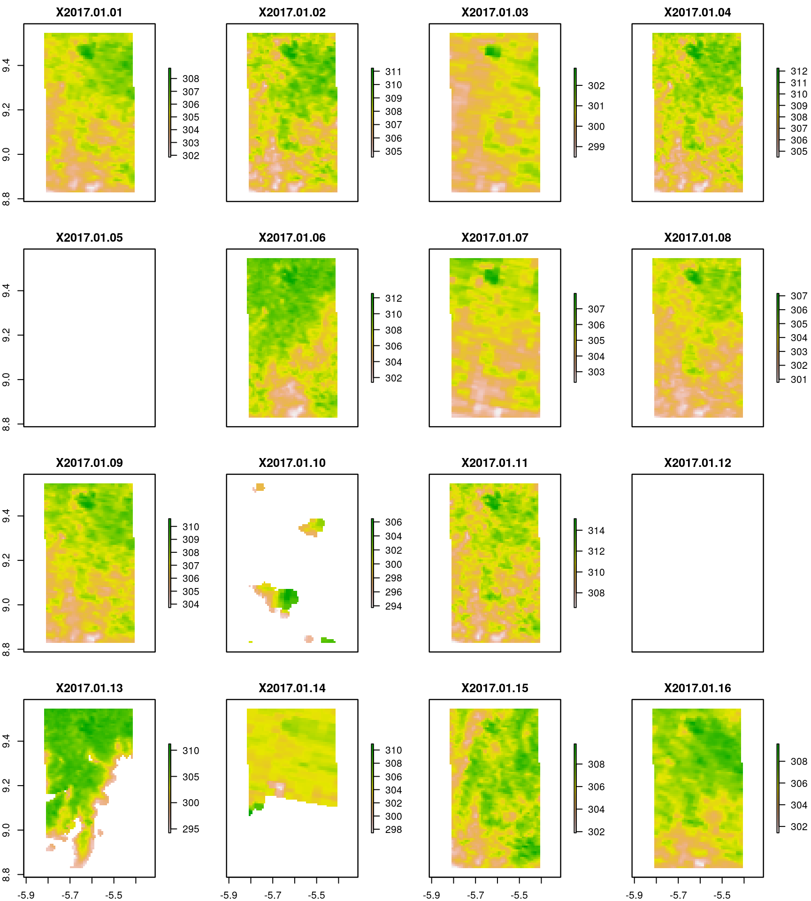
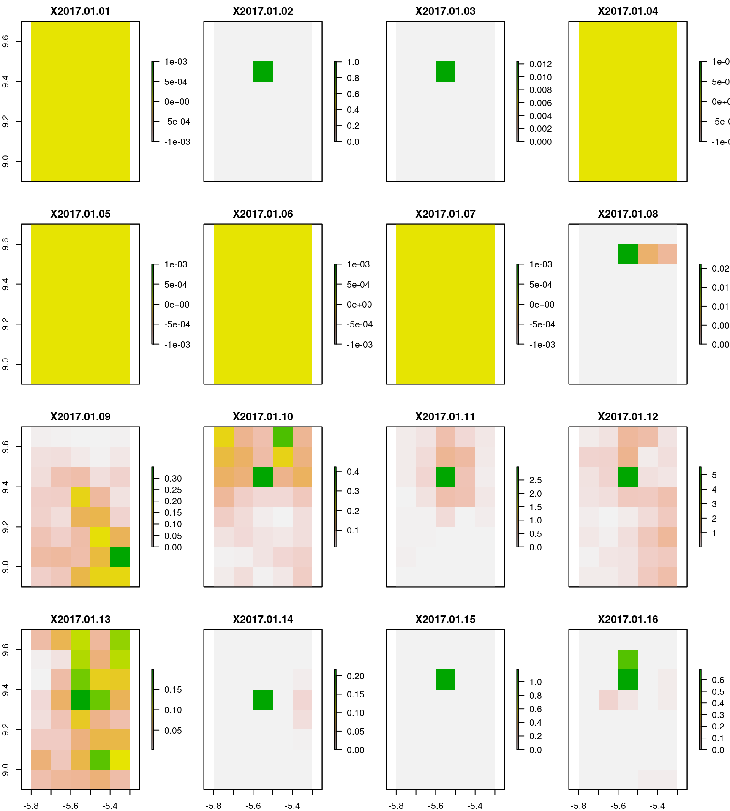
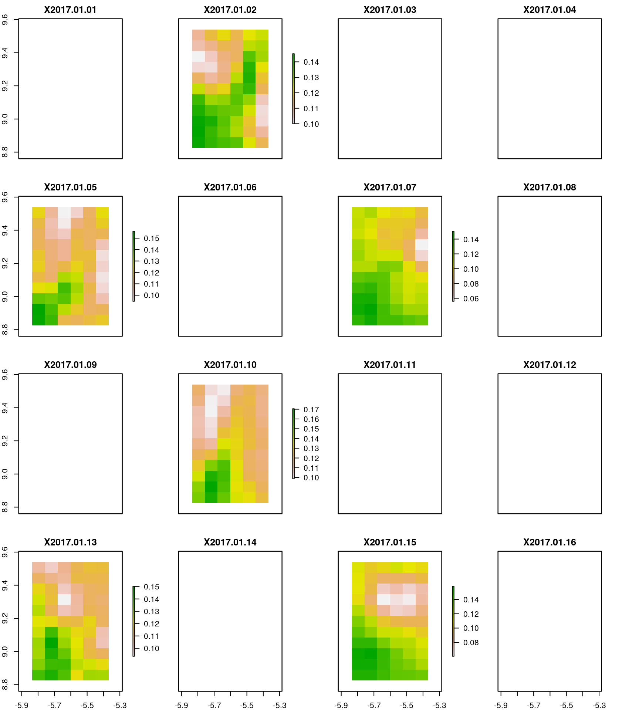

require(modisfast)
require(sf)
require(stars)
require(raster)
require(ncdf4)
require(magrittr)
require(purrr)The function get_collections_available() provides the collections that are available for download through the modisfast package
(collections_available <- get_collections_available())
# to get additional information for each collection :
# modisfast:::opendapMetadata_internalThe collections currently implemented are listed in the following table :
If we want to get detailed information on a specific collection, we use the function get_collection_info(). The function takes as input a single character string argument, the collection identifier, which is the column “collection” of the output data.frame of the function get_collections_available().
The function get_collection_info() will simply open a new browser tab with the metadata of the collection.
As an example, for the collection MOD11A1.006 :
Now that we know which collections are available, time to import the data !
Here we take back the example of the readme file, and we import the data in R afterwards.
We want to download over the 3500 km2 wide region of interest (mapped below) :
First we prepare the script : set-up ROI, time frame and connect to USGS with our credentials
# Set ROI and time range of interest
roi <- st_read(system.file("extdata/roi_example.gpkg", package = "modisfast"),quiet=TRUE)
time_range <- as.Date(c("2017-01-01","2017-01-30"))
# Login to USGS servers with username and password. To create an account go to : https://ers.cr.usgs.gov/register/
usgs_credentials <- readLines(".usgs_credentials.txt")
username <- strsplit(usgs_credentials,"=")[[1]][2]
password <- strsplit(usgs_credentials,"=")[[2]][2]
log <- login_usgs(c(username,password))
#> Successfull login to USGSWith the function get_url(), we get the OPeNDAP URLs for our collections of interest (MOD11A1.006, GPM_L3/GPM_3IMERGDF.06 and SMAP/SPL3SMP_E.003) given our ROI and time frame.
## Get the URLs of MODIS Terra LST daily
urls_mod11a1 <- get_url(
collection = "MOD11A1.006",
variables = c("LST_Day_1km","LST_Night_1km","QC_Day","QC_Night"),
roi = roi,
time_range = time_range
)
## Get the URLs of GPM daily
urls_gpm <- get_url(
collection = "GPM_L3/GPM_3IMERGDF.06",
variables = c("precipitationCal","precipitationCal_cnt"),
roi = roi,
time_range = time_range
)
## Get the URLs of SMAP 3-days
urls_smap <- get_url(
collection = "SMAP/SPL3SMP_E.003",
variables = c("Soil_Moisture_Retrieval_Data_AM_soil_moisture",
"Soil_Moisture_Retrieval_Data_AM_retrieval_qual_flag",
"Soil_Moisture_Retrieval_Data_PM_soil_moisture_pm",
"Soil_Moisture_Retrieval_Data_PM_retrieval_qual_flag_pm"),
roi = roi,
time_range = time_range
)
head(urls_mod11a1,3)
#> time_start name
#> 1 2017-01-01 MOD11A1.006.2017001_2017030.h17v08
#> url
#> 1 https://opendap.cr.usgs.gov/opendap/hyrax/MOD11A1.006/h17v08.ncml.nc4?MODIS_Grid_Daily_1km_LST_eos_cf_projection,LST_Day_1km[6093:6122][55:140][512:559],LST_Night_1km[6093:6122][55:140][512:559],QC_Day[6093:6122][55:140][512:559],QC_Night[6093:6122][55:140][512:559],time[6093:6122],YDim[55:140],XDim[512:559]
#> destfile
#> 1 MOD11A1.006/MOD11A1.006.2017001_2017030.h17v08.nc4
head(urls_gpm,3)
#> time_start name
#> 1 2017-01-01 3B-DAY.MS.MRG.3IMERG.20170101-S000000-E235959.V06
#> 2 2017-01-02 3B-DAY.MS.MRG.3IMERG.20170102-S000000-E235959.V06
#> 3 2017-01-03 3B-DAY.MS.MRG.3IMERG.20170103-S000000-E235959.V06
#> url
#> 1 https://gpm1.gesdisc.eosdis.nasa.gov/opendap/GPM_L3/GPM_3IMERGDF.06/2017/01/3B-DAY.MS.MRG.3IMERG.20170101-S000000-E235959.V06.nc4.nc4?precipitationCal[0:0][1742:1746][989:996],precipitationCal_cnt[0:0][1742:1746][989:996],time[0:0],lon[1742:1746],lat[989:996]
#> 2 https://gpm1.gesdisc.eosdis.nasa.gov/opendap/GPM_L3/GPM_3IMERGDF.06/2017/01/3B-DAY.MS.MRG.3IMERG.20170102-S000000-E235959.V06.nc4.nc4?precipitationCal[0:0][1742:1746][989:996],precipitationCal_cnt[0:0][1742:1746][989:996],time[0:0],lon[1742:1746],lat[989:996]
#> 3 https://gpm1.gesdisc.eosdis.nasa.gov/opendap/GPM_L3/GPM_3IMERGDF.06/2017/01/3B-DAY.MS.MRG.3IMERG.20170103-S000000-E235959.V06.nc4.nc4?precipitationCal[0:0][1742:1746][989:996],precipitationCal_cnt[0:0][1742:1746][989:996],time[0:0],lon[1742:1746],lat[989:996]
#> destfile
#> 1 GPM_L3/GPM_3IMERGDF.06/3B-DAY.MS.MRG.3IMERG.20170101-S000000-E235959.V06.nc4
#> 2 GPM_L3/GPM_3IMERGDF.06/3B-DAY.MS.MRG.3IMERG.20170102-S000000-E235959.V06.nc4
#> 3 GPM_L3/GPM_3IMERGDF.06/3B-DAY.MS.MRG.3IMERG.20170103-S000000-E235959.V06.nc4
head(urls_smap,3)
#> time_start name
#> 1 2017-01-01 SMAP_L3_SM_P_E_20170101_R16510_001
#> 2 2017-01-02 SMAP_L3_SM_P_E_20170102_R16510_001
#> 3 2017-01-03 SMAP_L3_SM_P_E_20170103_R16510_001
#> url
#> 1 https://n5eil02u.ecs.nsidc.org/opendap/SMAP/SPL3SMP_E.003/2017.01.01/SMAP_L3_SM_P_E_20170101_R16510_001.h5.nc4?Soil_Moisture_Retrieval_Data_AM_soil_moisture[678:1:688][1866:1:1871],Soil_Moisture_Retrieval_Data_AM_retrieval_qual_flag[678:1:688][1866:1:1871],Soil_Moisture_Retrieval_Data_PM_soil_moisture_pm[678:1:688][1866:1:1871],Soil_Moisture_Retrieval_Data_PM_retrieval_qual_flag_pm[678:1:688][1866:1:1871],Soil_Moisture_Retrieval_Data_AM_longitude[678:1:688][1866:1:1871],Soil_Moisture_Retrieval_Data_AM_latitude[678:1:688][1866:1:1871],Soil_Moisture_Retrieval_Data_PM_longitude_pm[678:1:688][1866:1:1871],Soil_Moisture_Retrieval_Data_PM_latitude_pm[678:1:688][1866:1:1871]
#> 2 https://n5eil02u.ecs.nsidc.org/opendap/SMAP/SPL3SMP_E.003/2017.01.02/SMAP_L3_SM_P_E_20170102_R16510_001.h5.nc4?Soil_Moisture_Retrieval_Data_AM_soil_moisture[678:1:688][1866:1:1871],Soil_Moisture_Retrieval_Data_AM_retrieval_qual_flag[678:1:688][1866:1:1871],Soil_Moisture_Retrieval_Data_PM_soil_moisture_pm[678:1:688][1866:1:1871],Soil_Moisture_Retrieval_Data_PM_retrieval_qual_flag_pm[678:1:688][1866:1:1871],Soil_Moisture_Retrieval_Data_AM_longitude[678:1:688][1866:1:1871],Soil_Moisture_Retrieval_Data_AM_latitude[678:1:688][1866:1:1871],Soil_Moisture_Retrieval_Data_PM_longitude_pm[678:1:688][1866:1:1871],Soil_Moisture_Retrieval_Data_PM_latitude_pm[678:1:688][1866:1:1871]
#> 3 https://n5eil02u.ecs.nsidc.org/opendap/SMAP/SPL3SMP_E.003/2017.01.03/SMAP_L3_SM_P_E_20170103_R16510_001.h5.nc4?Soil_Moisture_Retrieval_Data_AM_soil_moisture[678:1:688][1866:1:1871],Soil_Moisture_Retrieval_Data_AM_retrieval_qual_flag[678:1:688][1866:1:1871],Soil_Moisture_Retrieval_Data_PM_soil_moisture_pm[678:1:688][1866:1:1871],Soil_Moisture_Retrieval_Data_PM_retrieval_qual_flag_pm[678:1:688][1866:1:1871],Soil_Moisture_Retrieval_Data_AM_longitude[678:1:688][1866:1:1871],Soil_Moisture_Retrieval_Data_AM_latitude[678:1:688][1866:1:1871],Soil_Moisture_Retrieval_Data_PM_longitude_pm[678:1:688][1866:1:1871],Soil_Moisture_Retrieval_Data_PM_latitude_pm[678:1:688][1866:1:1871]
#> destfile
#> 1 SMAP/SPL3SMP_E.003/SMAP_L3_SM_P_E_20170101_R16510_001.nc4
#> 2 SMAP/SPL3SMP_E.003/SMAP_L3_SM_P_E_20170102_R16510_001.nc4
#> 3 SMAP/SPL3SMP_E.003/SMAP_L3_SM_P_E_20170103_R16510_001.nc4Note that for each collection, we have specified our variables (i.e. dimensions) of interest (argument variables). To get the full list available variables for each collection along with their metadata, we can use the function get_variables_info(). As an example :
var_info_mod11a1 <- get_variables_info("MOD11A1.006")
head(var_info_mod11a1,6)
#> name
#> 1 Latitude
#> 2 Longitude
#> 3 YDim
#> 4 XDim
#> 5 MODIS_Grid_Daily_1km_LST_eos_cf_projection
#> 6 Night_view_time
#> long_name units
#> 1 Latitude <NA>
#> 2 Longitude <NA>
#> 3 y coordinate of projection for grid MODIS_Grid_Daily_1km_LST meter
#> 4 x coordinate of projection for grid MODIS_Grid_Daily_1km_LST meter
#> 5 <NA> <NA>
#> 6 Time of nighttime Land-surface Temperature observation hrs
#> indices
#> 1 [YDim = 1200] [XDim = 1200]
#> 2 [YDim = 1200] [XDim = 1200]
#> 3 [YDim = 1200]
#> 4 [XDim = 1200]
#> 5 <NA>
#> 6 [time = 6833] [YDim = 1200] [XDim = 1200]
#> all_info
#> 1 Array of 64 bit Reals [YDim = 0..1199][XDim = 0..1199]long_name: Latitude\nunits: degrees_north
#> 2 Array of 64 bit Reals [YDim = 0..1199][XDim = 0..1199]long_name: Longitude\nunits: degrees_east
#> 3 Array of 64 bit Reals [YDim = 0..1199]standard_name: projection_y_coordinate\nlong_name: y coordinate of projection for grid MODIS_Grid_Daily_1km_LST\nunits: meter\n_CoordinateAxisType: GeoY
#> 4 Array of 64 bit Reals [XDim = 0..1199]standard_name: projection_x_coordinate\nlong_name: x coordinate of projection for grid MODIS_Grid_Daily_1km_LST\nunits: meter\n_CoordinateAxisType: GeoX
#> 5 Bytegrid_mapping_name: sinusoidal\nlongitude_of_central_meridian: 0.0\nearth_radius: 6371007.181\n_CoordinateAxisTypes: GeoX GeoY
#> 6 Array of 32 bit Reals [time = 0..6832][YDim = 0..1199][XDim = 0..1199]coordinates: Latitude Longitude\nlong_name: Time of nighttime Land-surface Temperature observation\nunits: hrs\nView_time: View_time data * scale_factor\nscale_factor_err: 0.0000000000000000\nadd_offset_err: 0.0000000000000000\ncalibrated_nt: 5\norig_scale_factor: 0.10000000000000001\n_FillValue: 255\nvalid_min: 0.000000000\nvalid_max: 24.00000000\nNumber_Type_Orig: uint8\ngrid_mapping: MODIS_Grid_Daily_1km_LST_eos_cf_projectionNow we download the data with the function download_data().
Destination file for each dataset is specified in the column “destfile” of the dataframes urls_mod11a1 and urls_gpm.
Setting the argument parallel to TRUE will fasten the download in case their are multiple data to download, because downloading will be parallelized
We finally import the data in R. Various classes can be used, depending on the collection. For instance, MODIS or VNP products can be imported as stars objects, to further use the excellent stars package for data cubes manipulation. All the data can also be imported as netcdf datasets using e.g. the ncdf4 package, or RasterLayer / RasterStackBrick of the raster package.
In any case, care must be taken when importing data that was downloaded through OPeNDAP. Depending on the collection, some “issues” were raised. These issues are independant from modisfast : they result most of time of a kind of lack of full implementation of the OPeNDAP framework by the data providers. These issues are :
These issues can easily be dealt at the import phase in R. The script below includes the manipulations that have to be done at the data import phase.
We set-up the modis CRS when we import MODIS or VNP data
modis_crs <- "+proj=sinu +lon_0=0 +x_0=0 +y_0=0 +a=6371007.181 +b=6371007.181 +units=m +no_defs"
####################################
# Import the MODIS time series as a rasterBrick object (1 rasterBrick for each dimension) :
mod11a1_rast_day <- urls_mod11a1$destfile %>%
brick(varname="LST_Day_1km",crs=modis_crs)
####################################
# The same can be done with the other variables (LST_Night_1km, etc.)We can also import the same MODIS time series as a stars object. Here the interesting point is that all the dimensions are imported at once.
(mod11a1_stars <- stars::read_stars(urls_mod11a1$destfile) %>% st_set_crs(modis_crs))
#> LST_Night_1km, QC_Day, LST_Day_1km,
#> stars object with 3 dimensions and 3 attributes
#> attribute(s):
#> LST_Night_1km [K] QC_Day LST_Day_1km [K]
#> Min. :281.1 Min. : NA Min. :293.8
#> 1st Qu.:289.1 1st Qu.: NA 1st Qu.:304.8
#> Median :290.3 Median : NA Median :306.6
#> Mean :290.1 Mean :NaN Mean :306.5
#> 3rd Qu.:291.4 3rd Qu.: NA 3rd Qu.:308.4
#> Max. :297.9 Max. : NA Max. :315.1
#> NA's :66331 NA's :123840 NA's :32851
#> dimension(s):
#> from to offset delta refsys point
#> x 1 48 -637982 926.625 +proj=sinu +lon_0=0 +x_0=... NA
#> y 1 86 1061449 -926.625 +proj=sinu +lon_0=0 +x_0=... NA
#> time 1 30 2017-01-01 UTC 1 days POSIXct NA
#> values
#> x NULL [x]
#> y NULL [y]
#> time NULL
# plot(mod11a1_stars)We flip the raster when we import GPM data
gpm_crs <- "+init=epsg:4326 +proj=longlat +datum=WGS84 +no_defs +ellps=WGS84 +towgs84=0,0,0 "
####################################
## Import the GPM time series as a rasterBrick object (1 rasterBrick for each dimension) :
gpm_rast_precipitationcal <- urls_gpm$destfile %>%
purrr::map(~raster(.,varname="precipitationCal",crs=gpm_crs)) %>%
brick() %>%
t() %>%
flip("y") %>%
flip("x")
####################################
names(gpm_rast_precipitationcal) <- urls_gpm$time_start
# The same can be done with the other variables ("precipitationCal_cnt", etc.)We set-up the missing bounding coordinates. For this we use the function get_optional_parameters() of the modisfast package.
smap_crs <- "+init=epsg:6933 +proj=cea +lon_0=0 +lat_ts=30 +x_0=0 +y_0=0 +datum=WGS84 +units=m +no_defs +ellps=WGS84 +towgs84=0,0,0 "
####################################
## Import the SMAP time series as a rasterBrick object (1 rasterBrick for each dimension) :
smap_sp_bound <- modisfast::get_optional_parameters(roi = roi, collection = "SMAP/SPL3SMP_E.003")$roiSpatialBound$`1`
smap_rast_sm_am <- urls_smap$destfile %>%
purrr::map(~ncdf4::nc_open(.)) %>%
purrr::map(~ncdf4::ncvar_get(., "Soil_Moisture_Retrieval_Data_AM_soil_moisture")) %>%
purrr::map(~raster(t(.), ymn=smap_sp_bound[1], ymx=smap_sp_bound[2], xmn=smap_sp_bound[3], xmx=smap_sp_bound[4], crs=smap_crs)) %>%
brick()
####################################
names(smap_rast_sm_am) <- urls_smap$time_start
# The same can be done with the other variables (Soil_Moisture_Retrieval_Data_AM_retrieval_qual_flag, etc.)Let’s plot everything !
Only the first 16 dates are plotted here-under
# Land surface temperature
mod11a1_rast_day <- projectRaster(mod11a1_rast_day,crs = "+init=epsg:4326 +proj=longlat +datum=WGS84 +no_defs +ellps=WGS84 +towgs84=0,0,0 ")
plot(mod11a1_rast_day)

# Soil moisture
smap_rast_sm_am <- projectRaster(smap_rast_sm_am,crs = "+init=epsg:4326 +proj=longlat +datum=WGS84 +no_defs +ellps=WGS84 +towgs84=0,0,0 ")
plot(smap_rast_sm_am)